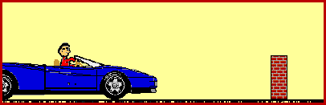

The Car and The Wall
According to Newton's first law, an object in motion continues in motion with the same speed and in the same direction unless acted upon by an unbalanced force. It is the natural tendency of objects to keep on doing what they're doing. All objects resist changes in their state of motion. In the absence of an unbalanced force, an object in motion will maintain its state of motion. This is often called the law of inertia.
The law of inertia is most commonly experienced when riding in cars and trucks. In fact, the tendency of moving objects to continue in motion is a common cause of a variety of transportation injuries - of both small and large magnitudes. Consider for instance the unfortunate collision of a car with a wall. Upon contact with the wall, an unbalanced force acts upon the car to abruptly decelerate it to rest. Any passengers in the car will also be decelerated to rest if they are strapped to the car by seat belts. Being strapped tightly to the car, the passengers share the same state of motion as the car. As the car accelerates, the passengers accelerate with it; as the car decelerates, the passengers decelerate with it; and as the car maintains a constant speed, the passengers maintain a constant speed as well.
But what would happen if the passengers were not wearing the seat belt? What motion would the passengers undergo if they failed to use their seat belts and the car were brought to a sudden and abrupt halt by a collision with a wall? Were this scenario to occur, the passengers would no longer share the same state of motion as the car. The use of the seat belt assures that the forces necessary for accelerated and decelerated motion exist. Yet, if the seat belt is not used, the passengers are more likely to maintain its state of motion. The animation below depicts this scenario.

If the car were to abruptly stop and the seat belts were not being worn, then the passengers in motion would continue in motion. Assuming a negligible amount of friction between the passengers and the seats, the passengers would likely be propelled from the car and be hurled into the air. Once they leave the car, the passengers becomes projectiles and continue in projectile-like motion.
back
|